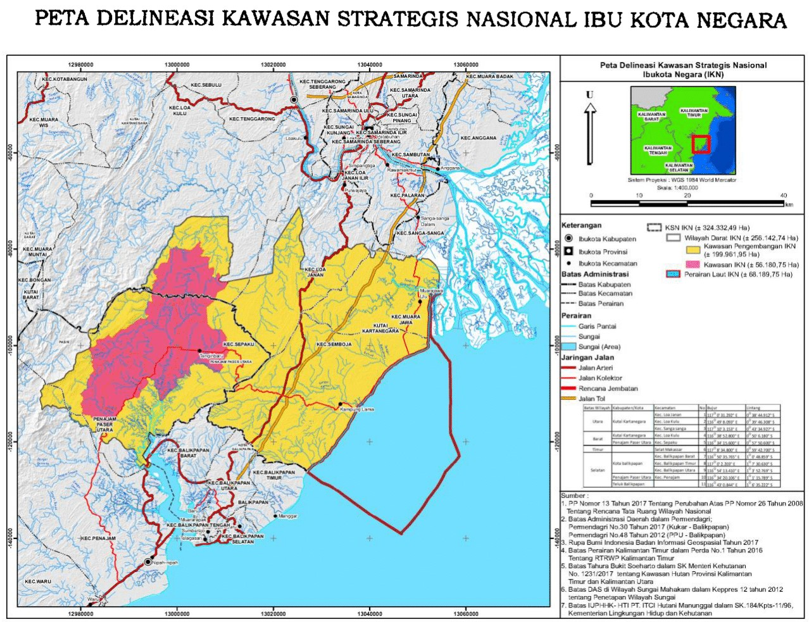

Take-home Exercise 2: Urban Applications of Raster-based GIS Analysis
Overview
This handout provides the context, task, expectations and grading criteria of Take-home Exercise 2. Students must review and understand them before getting started with the take-home exercise.
Setting the Scene
Nusantara, officially known as the Capital City of Nusantara (Indonesian: Ibu Kota Nusantara, IKN), is the future capital of Indonesia, scheduled to be inaugurated on 17 August 2024, coinciding with Indonesian Independence Day.
The city is designed for smart and sustainability and protecting its surrounding Kalimantan forests, targeting 80% of mobility to be supported by public transport, cycling, or walking and drawing all of its energy from renewable sources and allocating 10% of its area to food production. It is expected to encompass an area of 2,560 km2 (990 sq mi), surrounded by hilly landscapes, a forest, and a natural bay.
The site is situated on the east coast of the island of Borneo, specifically in the province of East Kalimantan.

Task
“We want our new capital city to become the centre of research and innovation at international level. So we need to build world-class universities here,” Mr. Widodo, the president of Indonesia told the media.
In this take-home exercise, you are required to apply GIS analysis and multi-criteria evaluation method to identify site suitable for the proposed new university by using the criteria below:
- It should be between 450-500 hectares in size
- It should avoid steep slope. Steep slope developments are relative more costly because they involve cut-and-fill and is less environmental friendly.
- It should be away from potential natural disaster risk areas such as sea coasts, major rivers and volcanoes.
- It should be near to current urban settlement areas but not at the current major settlement areas.
- It should avoid natural forest as much as possible.
- It should be highly accessible via road transport.
The study
The selected suitable sites must ne located in Sepaku district (kecamatan in Bahasa Indonesia) of East Kalimantan.
The Data
For the purpose of this project, the following data sources are recommended but students are welcome to include other appropriate data.
Landuse/Landcover (LULC) 2019. The word tutupan lahan means landcover in bahasa Indonesia.
Administrative Boundaries 2020: Province, Regency, District, Urban/rural sub-district
Rupa Bumi Indonesia (RBI) Provinsi Kalimantan Timur Perwilayah (Kabupaten/Kota). The term rupabumi means topographic. This data repository provides a comprehensive collection of topographical data layers of East Kalimantan.
Some of the descriptions, data field names, and data values are in Bahasa Indonesia. Google translator and others can be used to translate the words if necessary
Take-home Exercise Deliverable
GIS data repository
The GIS repository includes but not limited to geospatial data compiled and derived, QGIS project file and data dictionary. It must be in a single zipped file (i.e. .zip). The geospatial data must be stored in a GeoPackage database format. The data dictionary can be in either MS Word document or edited into the GIS data. The project deliverable must be uploaded onto eLearn.
For Mac users, you can save the raster data in geotiff format. Please do keep these data in a single folder called geotiff.
Take-home Exercise Report
You are required to edit your take-home exercise report in MS Word format. The take-home exercise report, beside others, should include all the thematic maps prepared and their respective discussion.
More importantly, the report must provide a reproducible step-by-step guide on the following process:
- data compilation, extraction and integration,
- data cleaning, preparation and wrangling,
- GIS analysis (including tabular and graphical analysis), and
- GIS maps design.
Reproducible means that readers are able to perform the same analysis and obtain similar results by using the same data sets and by following the step-by-step guide.
The title of the report should be in the form of SMT201_AY2023-24T1_Take-home_Exercise2.
This is an individual exercise. You are required to work on the take home exercise and prepare submission individually.
Grading
- Quality of the GIS data model built (including metadata) (20 marks),
- Appropriateness of the GIS methods used (20 marks),
- Quality of GIS maps prepared (20 marks),
- Reproducibility of the GIS processes (20 marks)
- Ability to provide correct interpretation of the analysis results and to recommend appropriate alternatives (20 marks).
Submission Date
The take-home exercise deliverable must be uploaded on eLearn by the submission deadline stated below.
Due Date: 15th October 2023, 11:59pm (midnight).